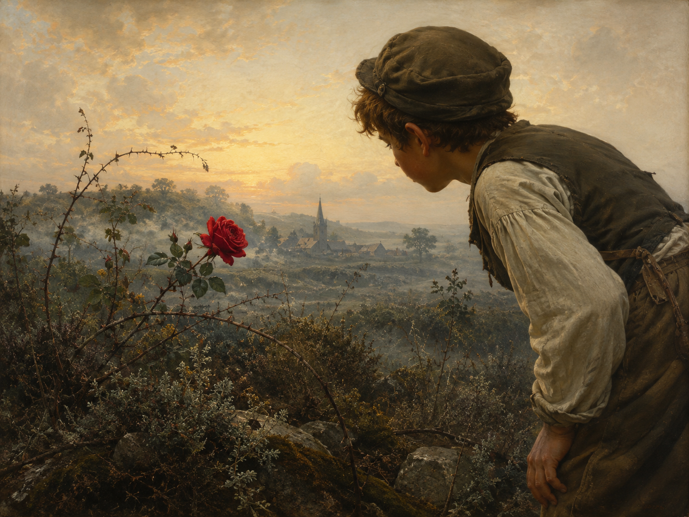

Sah ein Knab' ein Röslein stehn,
动词首位（V1）：动词 Sah 置于句首（正常陈述句应为 Ein Knabe sah…），是民歌体叙事谣曲常见的开篇手法，制造叙事的直接感。
野玫瑰
Gedichte（Ausgabe letzter Hand，1827）· Lieder
狂飙突进 · Sturm und Drang
约1771年作，1789年首次发表；此处采用1827年《Ausgabe letzter Hand》定本

图片由 AI 生成
Sah ein Knab' ein Röslein stehn,
动词首位（V1）：动词 Sah 置于句首（正常陈述句应为 Ein Knabe sah…），是民歌体叙事谣曲常见的开篇手法，制造叙事的直接感。
Röslein auf der Heiden,
Heiden 是 Heide（荒地）的古旧与格形式，现代德语应作 der Heide；此处为凑韵（与 Freuden、leiden 押韵）保留古拼法。
Knabe sprach: »Ich breche dich,
brechen 本义为“折断”，此处引申为“摘（花）”，隐含粗暴、不容分说的动作。
Röslein sprach: »Ich steche dich,
拟人化：玫瑰被赋予说话能力，与少年形成对话/对峙结构，是全诗的核心张力所在。
Und ich will's nicht leiden.«
leiden 在此不是“悲伤”而是“忍受、容许”之意；will's = will es，es 指代“被摘”这件事。
Half ihm doch kein Weh und Ach,
helfen 支配第三格（Dativ），ihm 即为其第三格宾语；注意：1789年 Göschen 初版此处作 "ihr"（指玫瑰），1827年定本改为 "ihm"（指少年）— 详见“校对记录”。
Mußt' es eben leiden.
eben 在此作语气小品词，意为“也就（不得不）”，带有无奈、听天由命的语气，而非“恰好”之意。
| Infinitiv | Präsens 3. Sg. |
Präteritum | Perfekt | Partizip II | Konjunktiv II | Hilfsverb |
|---|---|---|---|---|---|---|
| brechen | bricht | brach | hat gebrochen | gebrochen | bräche | haben |
| ↳ 诗中用简单过去式 "brach"。 | ||||||
| stechen | sticht | stach | hat gestochen | gestochen | stäche | haben |
| ↳ 诗中用现在式 "steche" 与简单过去式 "stach"。 | ||||||
| leiden | leidet | litt | hat gelitten | gelitten | litte | haben |
| ↳ 诗中出现现在式 "leiden"（不定式用法 will's nicht leiden）与简单过去式 "mußt' … leiden"。 | ||||||
| sehen | sieht | sah | hat gesehen | gesehen | sähe | haben |
| ↳ 诗中首行 "Sah ein Knab'…" 为简单过去式，倒装开篇。 | ||||||
Sah ein Knab' ein Röslein stehn,
Röslein auf der Heiden
Half ihm doch kein Weh und Ach
Röslein wehrte sich und stach
《野玫瑰》据信写于1771年歌德在斯特拉斯堡求学期间，一般认为与他和牧师之女弗里德莉克·布里翁（Friederike Brion）的恋情有关；诗歌采用当时赫尔德（Herder）等人所倡导的“民歌体”（Volkslied）风格：简单的分节歌形式、反复的副歌、口语化的省音拼写，模仿民间歌谣的质朴感。
这首诗后来被舒伯特（Franz Schubert，1815年，D. 257）等多位作曲家谱曲，成为德语世界流传最广的艺术歌曲之一。
诗歌表层是一则简单的“少年摘花”寓言，但“摘花—刺痛—忍受”的意象长期引发文学研究者的讨论：一些学者将其读作民间文学中常见的求爱/拒绝母题的程式化表达，另一些现代研究则关注其中隐含的强制与越界意味。本站不对此作定论，仅作背景说明，供学习者自行思考。
中文译文为本站学习译文（AI 辅助），在人工核对德文原意基础上完成，目标是尽量贴近原文的词序、重复结构与副歌形式，便于逐句对照学习德语，而非追求独立的文学译诗效果。已知存在多个中文名家译本（如郭沫若等译者的版本），因版权原因本站不转载全文，感兴趣的读者可自行查阅相关出版物或授权网络资源。
德文原文用两个独立来源（Zeno.org 与 deutschelyrik.de）交叉核对，二者在核心异文（第三节第4行代词、第5行动词）上完全一致，均代表1827年《Ausgabe letzter Hand》传统，可信度较高。另通过英文维基百科确认1789年 Göschen 初版存在不同文字（'ihr' 而非 'ihm'，'Mußte' 而非 'Mußt'），已在“语法要点”与“逐行注释”中说明，不作为正文采用。
本次未能成功访问 de.wikisource.org 对应页面（工具返回空白，判断为该站点对本环境不可达），故未将其计入独立来源；如后续可访问，建议补充核对一次。
押韵拼写（如 rot vs roth、Heiden vs Heide）经核实属正字法历史演变，不影响诗歌内容，本站正文采用两个主要来源共同显示的现代化拼写。需要说明的是，"Weh und Ach"（痛苦呻吟）是德语中的固定搭配，并非历史拼写残留。